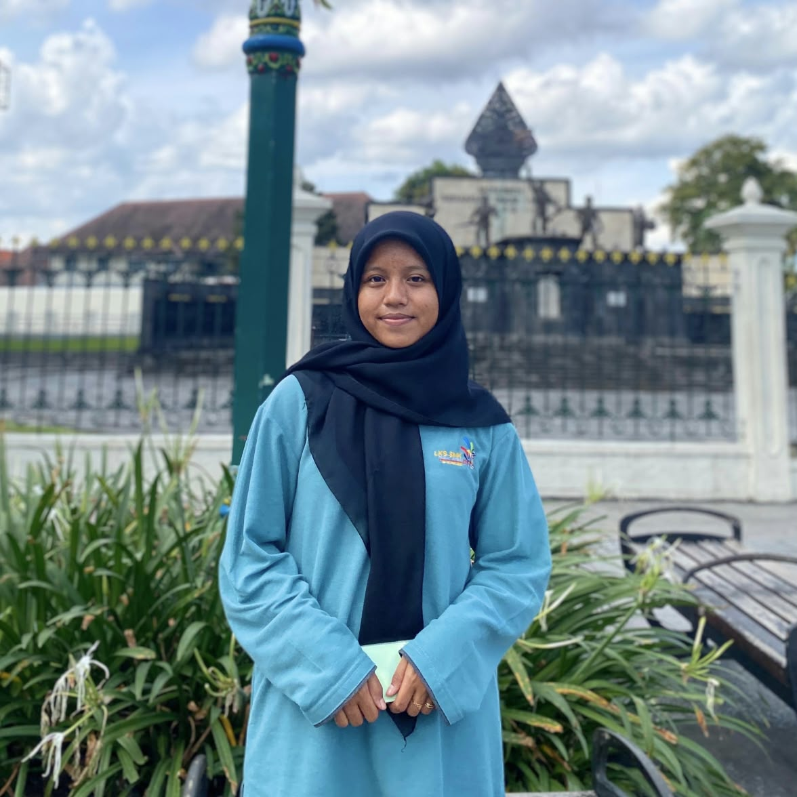
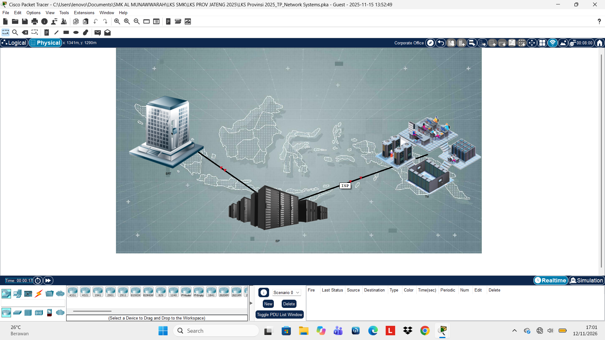
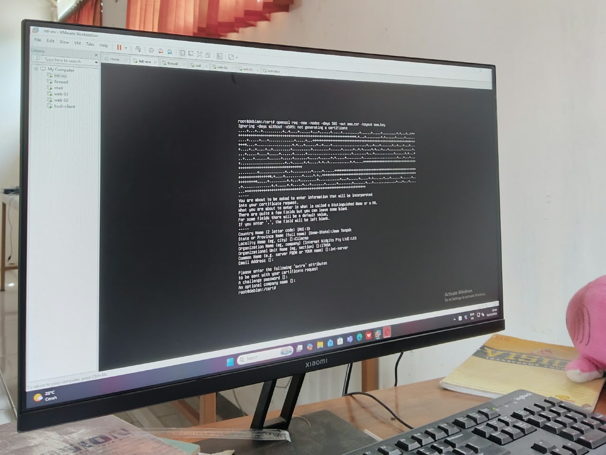
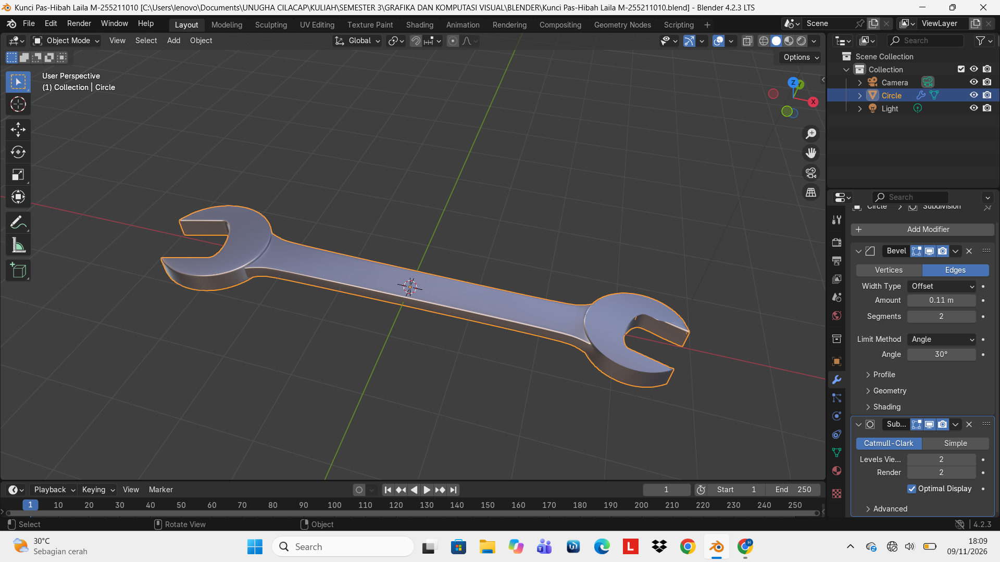
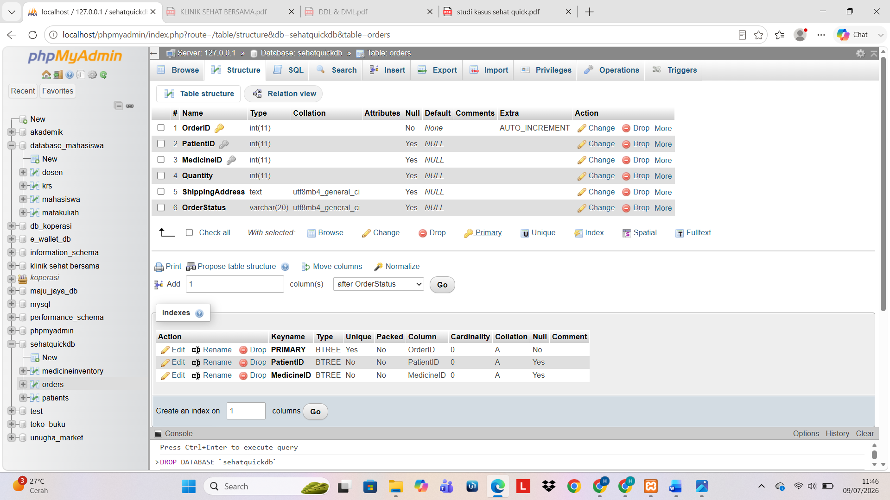

Computer Networking & Cable Installation
Memahami dasar jaringan komputer, konfigurasi jaringan, IP Address, troubleshooting, serta praktik pembuatan kabel UTP dan instalasi Fiber Optic (FO).

INFORMATICS STUDENT
Saya merupakan seorang mahasiswa Informatika yang memiliki ketertarikan pada bidang teknologi informasi, khususnya jaringan komputer, administrasi sistem, Linux, dan Cyber Security. Saya senang mengeksplorasi hal-hal baru, mempelajari perkembangan teknologi, serta mengembangkan keterampilan melalui berbagai proses dan pengalaman. Bagi saya, setiap kesempatan untuk belajar merupakan langkah kecil untuk terus bertumbuh dan menjadi pribadi yang lebih kompeten di bidang teknologi.
PROFIL SINGKAT
Sebuah perjalanan yang masih terus ditulis, dengan pengalaman dan pembelajaran di setiap langkahnya.
Saya Hibah Laila Muzayanah, mahasiswa Program Studi Informatika di Universitas Nahdlatul Ulama Al Ghazali Cilacap.
Ketertarikan saya pada dunia teknologi berawal dari rasa ingin tahu yang perlahan tumbuh menjadi sebuah ketertarikan untuk terus mendalami. Jaringan komputer, sistem operasi Linux, administrasi sistem, hingga Cyber Security menjadi bidang yang ingin saya jelajahi lebih jauh. Saya percaya, di balik setiap sistem yang berjalan, selalu ada hal menarik untuk dipahami dan tantangan baru untuk ditaklukkan.
Bagi saya, belajar bukan sekadar tentang memperoleh pengetahuan, melainkan tentang keberanian untuk mencoba, kesediaan untuk berproses, dan kemauan untuk terus melangkah. Setiap pengalaman adalah bagian dari perjalanan, setiap tantangan adalah ruang untuk bertumbuh, dan setiap langkah kecil membawa saya lebih dekat pada versi terbaik dari diri sendiri.
Saya mungkin masih dalam perjalanan untuk menemukan sejauh mana kemampuan saya, tetapi saya percaya bahwa setiap langkah yang dimulai dengan rasa ingin tahu akan selalu membawa saya menuju sesuatu yang berarti.
KEAHLIAN SAYA
Beberapa kemampuan yang terus saya kembangkan melalui pengalaman dan proses belajar.
Memahami dasar jaringan komputer, konfigurasi jaringan, IP Address, troubleshooting, serta praktik pembuatan kabel UTP dan instalasi Fiber Optic (FO).
Mengenal penggunaan terminal Linux, perintah dasar, dan pengelolaan sistem.
Memahami dasar pengelolaan sistem, konfigurasi, dan administrasi server.
Mengenal dasar pemrograman dan logika penyelesaian masalah menggunakan kode.
Mengenal desain grafis menggunakan CorelDRAW serta pembuatan dan pengolahan objek tiga dimensi menggunakan Blender.
PERJALANAN BELAJAR
Perjalanan belajar, berkembang, dan menemukan hal-hal baru.
Memulai perjalanan pendidikan, membangun pengetahuan dasar, dan mengenal lingkungan belajar.
Memperoleh berbagai pengalaman baru, memperluas wawasan, dan mulai mengenal banyak hal.
Menjadi awal saya mengenal dunia teknologi informasi, khususnya jaringan komputer, Linux, dan administrasi sistem. Saya juga mendapatkan pengalaman mengikuti LKS IT Network System Administration tingkat Provinsi Jawa Tengah.
Melanjutkan perjalanan di bidang Informatika dengan memperdalam pengetahuan, mengembangkan kemampuan, dan mengeksplorasi berbagai bidang teknologi.
PERJALANAN & PENCAPAIAN
Setiap pengalaman memiliki cerita, dan setiap pencapaian menjadi bagian dari proses untuk terus berkembang.
01. ORGANIZATION EXPERIENCE
Aktif mengikuti organisasi dan kepanitiaan di lingkungan akademik maupun luar akademik, yang memberikan pengalaman dalam mengembangkan kemampuan komunikasi, kerja sama, kepemimpinan, dan tanggung jawab.
02. COMPETITION EXPERIENCE
Mendapatkan pengalaman mengikuti berbagai kegiatan kompetisi untuk mengasah kemampuan, meningkatkan keterampilan, dan menambah wawasan. Salah satunya adalah Lomba Kompetensi Siswa (LKS) bidang IT Network System Administration tingkat Provinsi Jawa Tengah..
03. PERSONAL DEVELOPMENT
Memiliki kemauan untuk terus belajar, mencoba hal baru, dan mengembangkan kemampuan diri. Setiap pengalaman menjadi bagian dari proses untuk tumbuh dan menjadi lebih baik.
DOKUMENTASI KARYA
Beberapa pengalaman praktik dan hasil karya yang menjadi bagian dari proses belajar saya.

01. NETWORKING PROJECT
Praktik pembuatan kabel UTP, pengenalan Fiber Optic, konfigurasi jaringan, simulasi jaringan komputer, dan pengalaman LKS IT Network System Administration.

02. LINUX & SYSTEM ADMINISTRATION
Dokumentasi praktik Linux, penggunaan terminal, konfigurasi sistem, dan pengelolaan server.

03. GRAPHIC DESIGN & 3D MODELING
Hasil desain grafis menggunakan CorelDRAW serta karya objek 3D menggunakan Blender.

04. PROGRAMMING & DEVELOPMENT
Proyek pemrograman, tugas perkuliahan, pembuatan website, dan pengembangan aplikasi.